Potting Shed
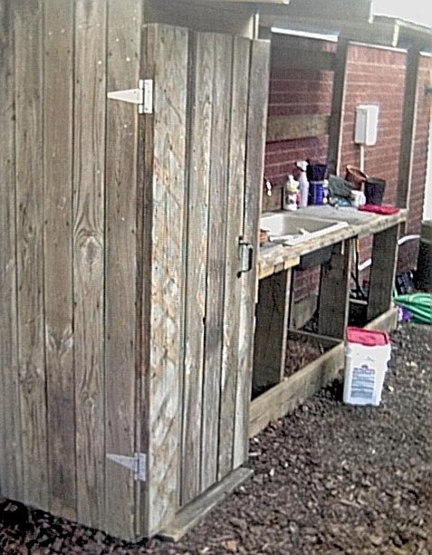
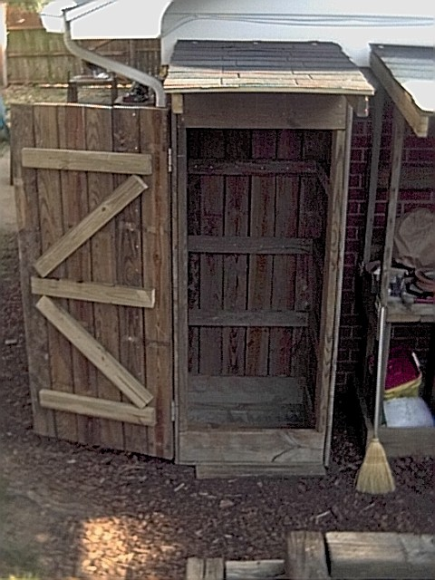
I have the plans as a PDF and as a PPT. The following instructions should be used in
conjunction with the PDF document.
Before beginning this project please take a look at the following pages. These pages contain things about simple
carpentry I learned. When you are finished you can visit the Main Page:
1) Wood Is Not The Size They say it is
2) The right tools are important, and they really
don't cost that much
3) Technique, a few hints and tricks help make the
job go easier.
Rose had many bags of 'things' sitting around and items that she used once a year that really needed to stay dry. Stakes, garden cloth, fertilizer, etc.
I decided to make her a potting shed to store all of these out of the weather to keep them dry. Or if you need an outhouse this design can easily be adapted for that ;-).
Page 1 - First we make the top and bottom frames as seen on the lefthand side
of page 1. The bottom frame will have a floor so that you can set things in the
bottom without worrying about them getting dirty or wet. Cut four 31 X 1.5 X
7.25" boards and cut four 24.5 X 1.5 X 7.25" boards. Find a nice
level surface with a step. Place a 31 X 1.5 X 7.25" board up against the
step. Next put the two 24.5 X 1.5 X 7.25" boards up against the 31 X 1.5 X
7.25" board. Finally put the second 31 X 1.5 X 7.25" board up against
the two 24.5 X 1.5 X 7.25" boards. You should have what looks like the top
left side of page 1. Using 2.5" deck screws and keeping this frame square,
screw the front 31 X 1.5 X 7.25" board into the two 24.5 X 1.5 X 7.25"
boards. Turn the entire frame around so that what was the front board is now
braced against the step and screw the other 31 X 1.5 X 7.25" board into the two
24.5 X 1.5 X 7.25" boards. You should now have a nice square. Repeat
this procedure to make a second frame. Now cut five 31 X 1 X 5.5" boards
. These will be the floor of your bottom frame. Attach them to the bottom
frame as shown on the bottom left of page 1. When you attach the boards on the
bottom, make sure that the boards are flush with all four sides of the frame. I
had a little bit of the last board lap over the edge of the frame (as you can see in
the next picture) and later used my jigsaw to make it flush with the frame. If
this happens trim the extra off of the frame. If you don't when you attach the
long boards on page two they will not fit correctly and make the shed
"lean". Your frames should now look
like:
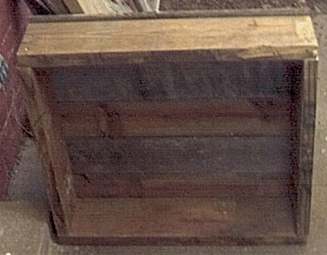
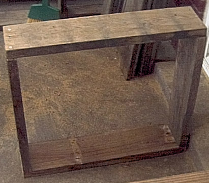
Page 1 (continued) - Now cut two 63.75 X 1.5 X 7.25" boards. These two
boards will help support the door later and act as a spacer to make sure that
everything is even.
Page 2 - Cut sixteen 85 X 1 X 5.5" boards. These will be the outer
walls of the shed. Place the top frame and the bottom frame on a large
flat surface with your two "spacer" boards between them. Now place
six of the 85 X 1 X 5.5" boards on top. The 85 X 1 X 5.5" boards you
put on the top and bottom frames should overlap about 1" on each side. Secure
the boards to the top and bottom frame with 2" or 2.5" deck screws. It
should look like:
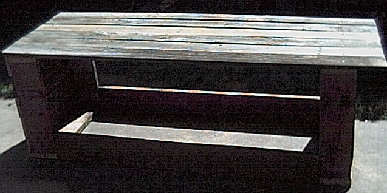
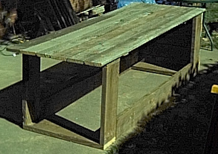
Page 2 (continued) - Now stand the unit upright and place five of the 85 X 1 X 5.5"
boards on the side and secure them to the frame and to the 63.75 X 1.5 X 7.25" spacer
board installed at the corners. I used some scrap wood (and of course removed them
when all the boards were secured) and a few deck screws to hold the spacer boards in place
while I secured the five 85 X 1 X 5.5" boards:
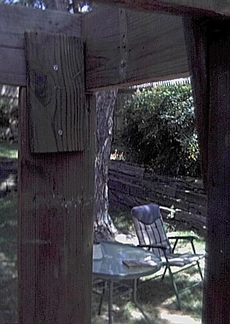
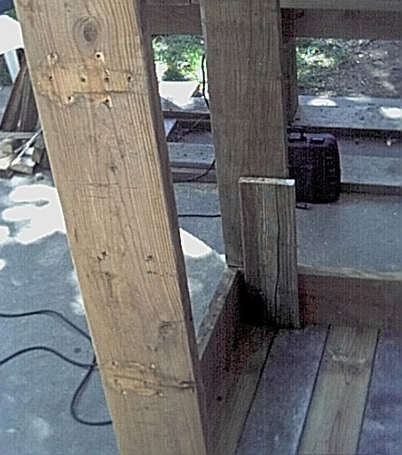
Page 2 (continued) - Do the same with the other side. It should now look like:
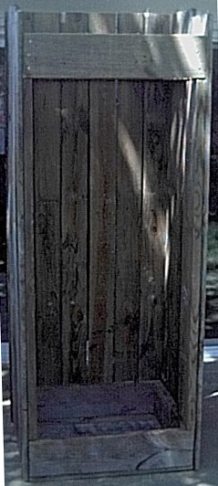
Page 2 (continued) - Now make the inside shelf support boards. In addition to their
obvious function these boards also help keep the outside boards from warping. For
each of the inside shelf support boards (I made three sets of supports) cut two 20 X
1.5 X 3.5" boards, one 28 X 1.5 X 3.5" board and finally the actual shelf boards,
three sets of three 31 X 1 X 5.5" boards. I placed them as shown on page 2
but feel free to make the shelves higher or lower as you would like. Your project
should now look something like this:
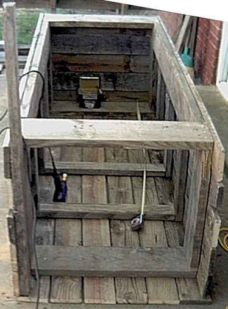
Page 3 - Cut two 48 X 1.5 X 3.5" boards and one 28 X 1.5 X 3.5" board. This
will be your roof support. Secure the two 48 X 1.5 X 3.5" boards as shown.
Now secure the 28 X 1.5 X 3.5" board on the top frame (hopefully this will help keep
some of the bugs out of the potting shed).
Page 4 - Cut the 85 X 1 X 5.5" boards on the sides with a jigsaw so that they are even
with the two roof supports. Cut nine 33 X 1 X 5.5" boards. These will be
the boards that you will attach the shingles to. Attach the shingles, you will need
eight shingles for this project. For a discussion on shingles see the instructions
on the page for making a potting bench. Your shed should
now look like:
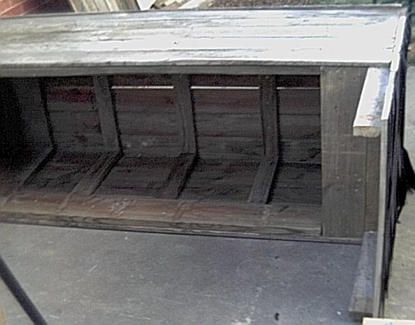
Page 5 - Now make the front door. Cut six 74 X 1 X 5.5" boards. Lay them
down up against your step so that the tops are all even. Cut three 27 X 1.5 X 3.5"
boards and two 31 X 1.5 X 3.5" boards. Place these boards as shown on the left
hand side of page 5. Secure the 1.5 X 3.5" boards to the 1 X 5.5" boards
with enough deck screws that all boards are held together. Now flip the door over and
secure all the 1 X 5.5" boards to the 1.5 X 3.5" boards. I put about two
deck screws for every spot where the 1 X 5.5" boards touched the 1.5 X 3.5"
boards. Now cut your 74 X 7.25 X 3.5" board. Secure this board to the door
as shown on the right hand side of page 5, secure the board by screwing the deck screws in
from the two outermost 1 X 5.5" boards down into the 74 X 7.25 X 3.5"
board. Again, be generous with the deck screws as this 74 X 7.25 X 3.5" board,
this is the board you attach your hinges to and this board will support the entire weight
of the door. Your door should now look like:
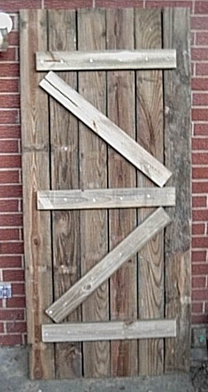
Page 6 - Now attach the door to the potting shed. I found this easiest to do if the
potting shed was lying on its back. You can attach the door so that it opens either
left or right. Page 6 shows the door opening from the right, but to open from the
left just rotate the door 180 degrees and attach the hinges on the right hand side.
I used two 6" hinges to attach the door to the left hand side. I should have
put a couple of small shims (1/8" to 1/4") in between the door and the potting
shed when I attached the hinges. When I stood the shed upright the wood had swelled
a little and I had to shave off the side board that the hinge was attached to so that the
potting shed door would close completely and easily against the shed. This is what
it looked like when I attached the hinges:
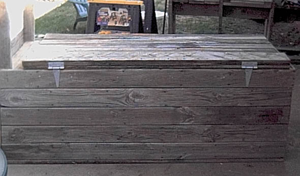
Finally attach the latch on the other side (I used a swivel hook and an eye bolt, see below),
stand your potting shed up (good luck, I suggest two or three fairly strong people).
Put your shelves inside and your handle on the front and you are ready to go.
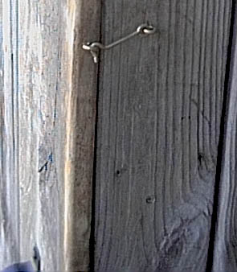
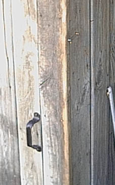
Main Page